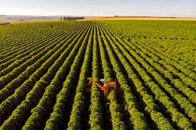

O Protagonismo Brasileiro na Revolução Verde
A agricultura sustentável ganha espaço no debate global em um momento de pressão sobre custos, segurança alimentar, energia e mudanças climáticas. Segundo Luciana Gorab, esse cenário coloca o Brasil em destaque por unir produtividade e inovação.

O avanço de tecnologias baseadas em microrganismos, como o trabalho da microbiologista Mariangela Hungria, mostra como o país reduz a dependência de fertilizantes químicos, capturando nitrogênio do ar e economizando recursos energéticos valiosos.


Deixe sua opinião